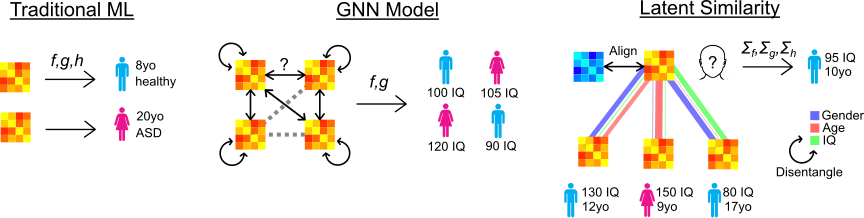

Latent Similarity
Robust estimation at small sample sizes
Latent similarity is a machine learning tool used to make predictions from inter-subject similarities. It is extremely quick to train and performs better than other models at small sample sizes.

December 28, 2022:
The paper has been accepted to IEEE TBME! Here is the final pre-print version.
September 21, 2022:
I made a presentation describing LatSim and another near-term research project.
September 14, 2022:
Our pre-print has been posted on TechRxiv.
August 30, 2022:
Our pre-print has been posted on arXiv!August 23, 2022:
The LatSim code is now available on GitHub; we are working on a PIP package.
August 8, 2022:
We have completed part of the tool as the ImageNomeR project at the UAB Multiomics Hackathon